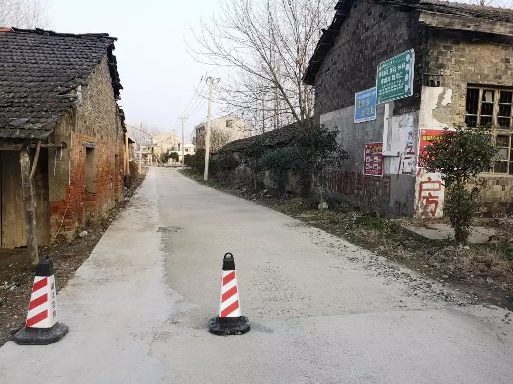
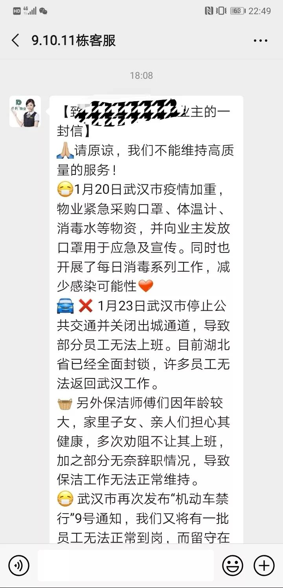

一位武汉诗人的小镇隔离日记：同事昨天感染了，从崩溃到重生 | 深网
原文链接 备份链接 作者 | 谈骁 (武汉诗人，春节自我隔离在潜江小镇。) 编辑：康晓 出品｜深网·腾讯小满工作室 欢迎下载腾讯新闻APP，阅读更多优质资讯 编者按：通过湖北各城普通民众的视角和抗疫日记，记录这一段我们永不会忘记的历史。封 …

潜江成为疫区很多天了。之前叫隔离日记，想到几天后隔离就结束了，而疫情未必缓解。改叫疫区笔记吧。
1-28，正月初四，隔离第八日。晴。
全国新增确诊1771例，湖北1291例，其中，武汉892例。昨天日记里，我在形容武汉增长数时，用了“只有”：只有80例。谁能想到，今天的数量直接乘以10。报道中说，这是检测能力增强所致。绝对的数量仍然能换起新的震惊。
昨天把前一周的日记（1.21-1.27）整理出来，有一万多字，发给了腾讯网的朋友。他在深网发了出来。主要人物，我都做了化名。
今天天气更好，真正的阳光普照。起床时满目的白霜和雾气，太阳一出，雾气退散，白霜化成水滴。屋后的鸡叫声也更响亮一点，岳母说，晴天里，鸡下蛋都比平日早。小溪被鸡叫吸引，我牵她去看。和鸡大小相仿的小动物，猫或者狗，小溪都喜欢。但这些动物里，只有下蛋的鸡会叫个不停，所以格外有吸引力。我们到了后院鸡笼边，她朝着鸡一顿疾走，鸡先是咯咯咯咯咯咯的声音，突然一仰脖子，叫出了那一声“哒”。声音大了一倍不止，小溪吓得一抖，后退了一步。
从昨天开始，小溪不那么认生了。岳母和妻妹偶尔可以接过去抱一下。侄女和她玩躲猫猫游戏，她也格外配合，笑得很灿烂。妻子很欣慰，说这就是想带小溪回来的目的，体会真正的姐妹快乐。在武汉，和邻居一起，终究不如家中亲密。
和小溪的亲密感，以及进一步的和家人的相依为命感，大概也是这次隔离的收获。昨日科比过世后，有两个人的发言格外触动我。一是帕金斯。之前他一直和曾经的队友杜兰特打嘴仗，互相嘲讽，昨天突然发推，称特别后悔，希望和杜兰特重归于好。另一个是加索尔。他在采访里说，科比让他明白，场上的数据，NBA生涯，合同工资，一切都不重要了，他只想回家陪女儿。
生死面前，一切都是小事。昨晚我睡前和范晓东聊天，也有这种想法——应该说，自从隔离在家，看到外面的风暴持续，我就在这么想。幻灭感是基于一切所见都烟消云散，曾经没想过的大事正应接不暇。我对范晓东说，这次病毒事件，大致会让我重新修正自己的人生观。也不是妄言，修正之一起码是，更加热爱生活，爱家人，爱当下的、鲜活的此刻。
中午，听岳母说棉棉已基本好转，可以出门活动了。岳母知道我好奇，也转述了棉棉生病前因后果。她年前一周感冒（很可能是弟弟传染），进杨市医院时，正是冠状病毒肺炎发端，医院不敢大意，立即拍了胸片，抽了血。确实只是普通肺炎，遂回家住，只每天去医院打吊瓶。之所以拖到今天才好，因为棉棉没有好好吃药。家人给她的止咳糖浆等药，她全悄悄倒掉了。
不久棉棉过来找侄女玩，我问她倒在了哪里。棉棉说，倒在了床脚的蚊香盘子里。我再问她是不是一直在倒，她就不肯说了。
我自觉得日记还算客观，也并无太多情绪渲染。但许多朋友都因为看了我日记，以为我状态不好，让我保重。云南的张雁超打来电话问我情况，我一一作答了。他是云南水富警察，我们通电话时，他正在高速路口拦车为返乡人员测体温。
天门的朋友小湖也电话我。我们因为平日一起上下班，聊得久一些。她身体不大好，因此这次格外注意。回家后严格隔离，精神紧绷的后果是，对自己的感觉格外敏感：这两天总想咳嗽，只是“想”而已，强忍也能忍住。我说一定是心理作用。她并不认可，说自己一身伤，唯独呼吸系统没问题。又说前日口渴，两日喝了差不多30瓶矿泉水。她并不担心自己感染（之前的一身伤病，已经让她对疾病有了足够的抗体），忧心的，是自己变成了传染源，让家人受罪。
妻子的同事西洱此时正滞留日本。1月16日，她请了年假，带着孩子和婆婆出去，原计划25日飞回。东航停飞了，只得改签到2月9日，经上海回来。还有十多天呢，东京太冷，他们转道冲绳，权当假期延长。我和西洱聊天时，说她完美避开了武汉的封城。她说人在日本，漂泊无依之感，可能并不比身在武汉好多少。她的漂泊感，大多来自对何时回国的困惑。2月9日的票是买了，但能否准时回来，还是一个问题。她还担心，落地上海后会被隔离。我联想到近日武汉人在外省待遇，问她在日本感觉如何。她本来是打字回复了，临时改了语音，说日本并无强制隔离措施，对武汉人也没有特殊对待。
我今天看新闻少，因为到处都是武汉人（湖北人）在外地人人喊打的消息，我实在不想看。可还是躲不过。朋友圈一个师妹就遭遇了这个。她在安徽宣城，楼下的车被网友发到网上，“宣城头条”竟然还抄送转发，下面有人评论：“这些个武汉的，滚出宣城。”

21号赴山东的H同学，这两天尤其安静。我昨天把日记给他看，他也只淡淡回了句“谁没有难处呢”。武汉人在外地待遇，我本想问他感受，后来想到他是回岳母家，且没有开车，大概不会暴露。今天他突然对我说，他经历了一件特别神奇的事。
他21日回山东，并未去岳母家，而是在妻子堂弟家隔离。山东对武汉去鲁人员筛查严格，昨天新闻说，共查出69180人。H和他妻子，就在这69180之列。至25日，H突然发烧，被送往济宁医学院附属医院，住进了负压病房。负压病房内的气压低于病房外的气压，外面的新鲜空气可以流进病房，病房内被患者污染过的空气就不会泄露出去。这是很严肃的对待了。CT、验血、咽拭子，规范流程都走了一遍。其间，一度高烧39.4，医生直接上了退烧针，第二天醒来37.7。那个难熬的半天，他几乎以为自己已被感染。负压病房噪音大，他开始睡眠极差，后来习惯了噪音，又睡得极沉。中间被护士喊醒了几次。
他这经历，让我想到了许真。许真就是在高烧期间发朋友圈，让我们惊慌失措的。不过，H同学说他的遭遇“特别神奇”，在于化验结果出来了，并不是病毒感染，而是感染了水痘。
一个30多岁的男人，竟然被水痘感染。事后觉得神奇，事中呢，当此全国一片惶恐之际，不知道H怎么挺过来的。我大概还记得，他住院之前，正是杨晨在群里说老公发烧、自己发烧之时，那时他还在安慰杨晨。25日，我们在群里说了许久的话，他只说了句“在家隔离中”，再无只言片语；四点多，大概就是他高烧之时，和我聊天，他问：“武汉何时能回？”我说：“一个月保底，赶紧给岳父母交生活费。”
许真情况已稳定，他发了朋友圈报了平安。说自己是轻症患者，之前是自己过度惊吓了自己，极度紧张和恐惧而致。看他朋友圈附的定位，已经离开医院了。
1–29，正月初五。隔离第九日。晴。
昨天日记说许真已经离开医院回到了学校，应该无恙。早上五点多，他开始在朋友圈公布他关于此次病毒的见解：同源病毒、遗传bug之类。涉及很多专业表述（可能是看似专业），问题是他虽是博士，却是文科专业。前几日他高烧之前，也说过类似的话。
希望他真的无恙。
我认识的感染者，只有许真一人。至于朋友的朋友、的邻居、的同事，感染者就多了。悲欢夹杂，终究遥远。这两天我已能克制自己，不去看那些生离死别、无路彷徨。我为自己找了一个借口：我们从未见面，以后也很大可能不会见面，那么，那些逝者，我就当他们还在。这确是此时的自我宽慰之道，似乎也是无能为力的自我麻醉。
中午，队长郑玉堂第三次上门，挨家挨户贴告示。之前是红色倡议书，这次是公开信，且有具体对象：“返乡人员”。信上口吻温和，只说如从武汉返回或有武汉逗留经历，需要自觉隔离两周。这公开信是挨家挨户贴的，其实也等于取消了指向性，不像省外一些地方，只在返乡人员门口挂横幅。后面听门口广播说，这公开信潜江共发出了2500份，而之前的倡议书，共发出25000份。


岳母说村里今天也封路了，郑玉堂贴公开信时，我问他封路情况。他说这是民间的“自发行为”，村里没有相关通知。我下午戴口罩、骑自行车去了岳母所说的封路处，不过是几个塑料桩子而已，不是我想象的石堆或者泥堆。

和母亲视频，她提到我哥的超市年后生意冷清。卖出去的，都是米面粮油这些不急于卖出的；拜年的礼盒，几乎都摆着没动。这是意料中的事，对小镇上的人来说，大部分消费并非刚需，而是面子上的消耗。如果走亲访友，席面要做得好看，零食水果亦不能少；一家人宅着，吃穿用度就一切从简了。
岳母家就是如此，如果一切正常，正月初三因为是奶奶生日，家里要大宴宾客，少不得出门采购置办。现在门口菜园可以满足一切所需。妻子带小溪院子里散步时，一一告诉她菜园中的东西：开花的白菜，包白菜，萝卜菜，油麦菜，茼蒿，莴苣。除此还有田野上的野菜。
滞留日本的西洱，今天加入了一个日本回汉自助群。她定的9号经上海回国的航班被取消了。据说，有180人即可包机回武汉，这是另外一个群“武汉流浪儿在日本”的经验。群里提供的最优方案，是与大使馆联系直飞武汉；退而求其次，是先落地长沙，然后搭高铁去武汉后几站，想办法在武汉下车。
下午，收到武汉交警短信。和9号令相关的一条通知。提醒私家车主，非参加疫情防控工作，非参与民生保障工作，非因看病就医或工作、生活急须使用机动车的，一律不得上路行驶。不过也留有余地：“其它确有急须的，可先通行，后由社区或单位出具证明。”
睡前，看到省防控指挥部的决定：全省各类企业复工时间不早于2月13日24时。我最少还要在潜江待半个月。小溪的纸尿裤、奶粉告急，要找机会去市区补给了。
数据：全国确诊累计5997例。死亡132例。湖北共3554例，昨日增加840例。
1-30。正月初六。隔离第10日。
又有朋友感染了。
昨天我还在说，身边的朋友只有许真感染。且我和许真并无接触，所以这几天的忧心只有出于朋友的关切，没有作为一个接触者的慌乱。
新感染的朋友，和许真不同，21号回潜江之前，我还和他见过面。如果说，之前新冠肺炎是悬在头顶的乌云，只是笼罩，只是压迫，今天，云中终于有雨落下，滴在身上，无可避免，没有侥幸。
算起来，我已经隔离十天，希望接下来几天没有异状。这位朋友平时身体健康，希望他能和许真一样，只是轻症，平安无恙。
中午，岳父召集邻居来家里打麻将。打之前聚在门口闲聊。一个说棉棉的爷爷前天打麻将感冒了，这几天没有上桌。一个说戴口罩没用，且不舒服，透不过气。上桌之后，每人背后还站人围观。
我上楼和妻子说，能不能管一下，把这桌牌赶走。妻子摇头说：管不了哦，爸爸不得听我的。我抱小溪下楼，站在岳父身后，先是半开玩笑说，这几天你们还一点不注意啊。岳父说：不哪门搞哦，没得事。我没忍住，对着楼上喊妻子名字，又去外面喊妻妹。“你俩去管一下你爸。”我大概比较严肃，声音也不小，妻子没下来，妻妹和岳母都来了。终于把牌桌轰走。
吃过午饭，郑队长过来发口罩。一袋，八个，一次性医用口罩。潜江本地的江赫医用材料有限公司生产。一户一袋，算起来，刁庙一队就发了近千个，如果是全市发放，数量就很庞大了。

武汉我所住的小区也确定有人感染。之前物业一直以一种“有我们在别怕”的自信在群里发布消息，今天的消息，终于有了一丝脆弱和无力。第一句就是：请原谅，我们不能维持高质量的服务了。
原因大致是以下几点： 23日封城，导致部分员工无法上班；目前湖北省已经全面封锁，许多员工无法返回武汉工作；保洁师傅辞职，导致保洁工作无法正常维持；武汉市再次发布“机动车禁行”9号通知，一批员工无法正常到岗，而留守在项目的员工身体负荷和心里压力过大，也需要休息和换班。
我一直对小区物业有好感，平时他们算得上细致贴心。发这样的公开信，可以想见他们的无奈。业主群里，所有人都表示了理解。这不是物业的无力，而是整个城市的无力。当一个城市都在呼告、在求救，一个小区如何能事事周全？

录一个新闻。今天发表于医学期刊新英格兰杂志（NEJM）的文章，题为“新型冠状病毒感染肺炎在中国武汉的初期传播动力学”。作者来自中国疾控中心、武汉疾控中心等机构。文章显示，密接者间人际传播去年12月中旬已经发生。

像是作为佐证，某部下文，要求科研人员把论文写在祖国大地上，把研究成果应用在战胜疫情中，在疫情防控任务完成之前不应将精力放在论文发表上。
潜江今天也发布了限行的5号令：自今天10时起，潜江市中心城区、镇村道路实行机动车、电动车限制通行的交通管制措施，主要通行道路实行物理隔离和设卡管理。
数据：昨天湖北新增确诊1032例。其中武汉356。余下在各县市。以黄冈、孝感为重灾区，分别新增172、125。至此，全国7830例，湖北有4586例。
原文链接 备份链接 作者 | 谈骁 (武汉诗人，春节自我隔离在潜江小镇。) 编辑：康晓 出品｜深网·腾讯小满工作室 欢迎下载腾讯新闻APP，阅读更多优质资讯 编者按：通过湖北各城普通民众的视角和抗疫日记，记录这一段我们永不会忘记的历史。封 …
原文链接 备份链接 我有点后悔离开武汉了。自从回到乡下，武汉的肺炎疫情很是让人揪心，过年也变得寡然无味，大家都心神不宁的。早知如此，还不如就留在武汉过年，还安心一些。 封城那天，网络上不断有人炫耀“逃离”武汉，我就觉得好笑。疫情面前，有人 …
原文链接 备份链接 湖北潜江杨市刁庙村，门口的菜园 今天正月初一。从武汉回潜江的第五天。 潜江目前无感染。但最近的天门有3例确诊。 昨天上午，妹夫开车回了天门。他是上门女婿，家里只有一个老母亲。放心不下，年饭没吃就走了。早上，岳父电话他， …
原文链接 备份链接 除夕那天下午，武汉一家医院设备工程师陈晨（化名）终于去了工作所在的医院挂号就诊，他已经连续咳了 4、5 天了。 CT 显示双肺纹理增加，考虑感染性病变。因为肺炎症状较轻、病床紧张，没有太多犹豫，陈晨在医生的建议下拿了药 …
原文链接 备份链接 开启更有意思的武汉！请点击上方优良better →点击右上角“…” → “设为星标 ” 在这个春节，“隔离”替代“团聚”成了主题。 1月23日，上午10时，武汉开始“封城”。交通的阻断，出行的限制，让远 …